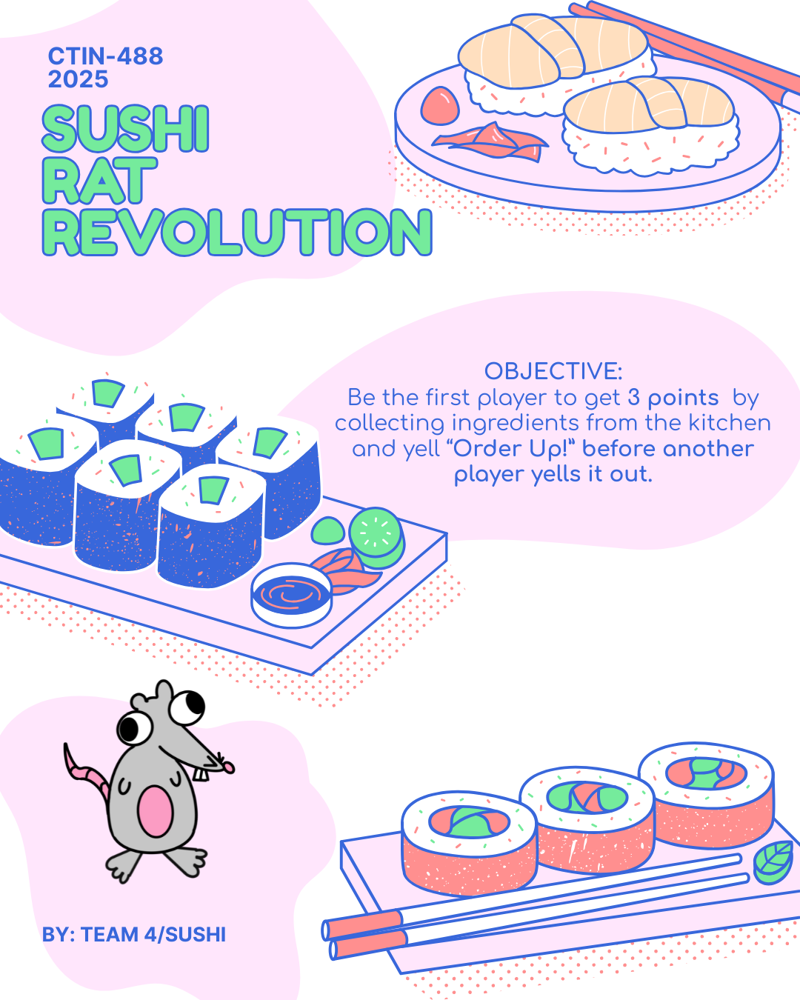

How I modded Up the River to add a rotating conveyor and new tension loops?
Overview — Modding Up the River
Sushi Rat Revolution began as a targeted mod of Up the River built under a structured two-week work cycle. Across Week 1 and Week 2, our team introduced a rotating conveyor mechanic, redefined how rats interact with the river, and layered in set-collection goals to reshape push-your-luck decisions. The short timeline forced us to treat each week as its own micro-sprint: Week 1 focused on proving the core mechanic, and Week 2 focused on smoothing pacing and clarifying player choices.
- Week 1: Defined the conveyor, paper-prototyped new states, clarified rat movement, and identified broken loops.
- Week 2: Smoothed pacing, tightened rules text, aligned iconography with player cues, and recalibrated set-collection rewards.
- Kept all changes compatible with the original components so the mod could function as a drop-in rules patch.
- Documented the final rule diffs so a producer, QA team, or instructor can quickly understand what changed and why.
Mod Design & Process
We approached the project like a small production team: identify a friction point → propose a minimal rule change → prototype → playtest → iterate. Because the class schedule locked us to a two-week cycle, every change had to either sharpen tension, clarify feedback, or improve player flow.
- Reframed the conveyor as the core risk engine that determines urgency each turn.
- Balanced set-collection so rewards build over time but don’t stall the race pacing.
- Resolved early flow issues where players hesitated or stalled by simplifying turn structure and reducing ambiguous edge cases.
- Designed icons and card layouts to be easily reskinned in a future art or digital pass.
Production Notes
- Rule changes are isolated so the base Up the River experience stays intact for players who prefer the original.
- Card and icon assets are built as modular layers for fast updates or localized variants.
- Playtest reports and journals are structured to support QA, usability review, and future digital prototyping.